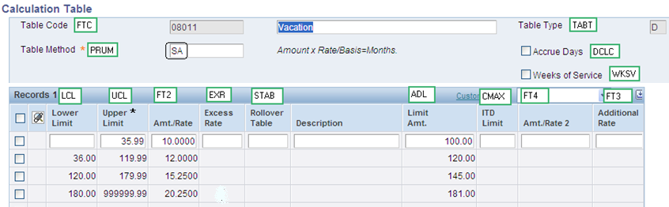
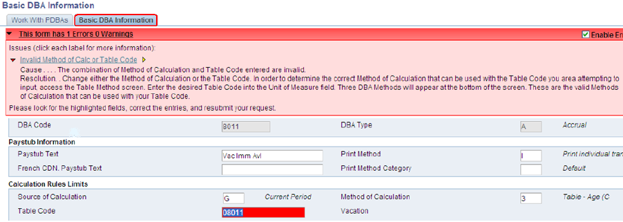
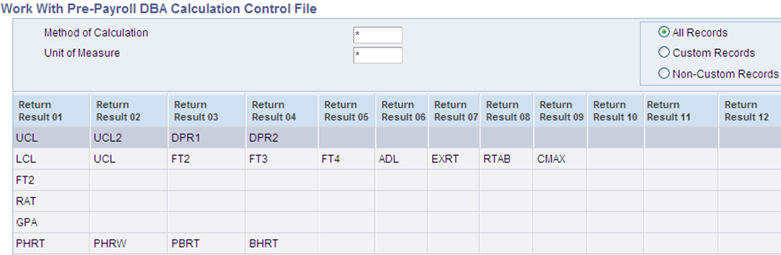
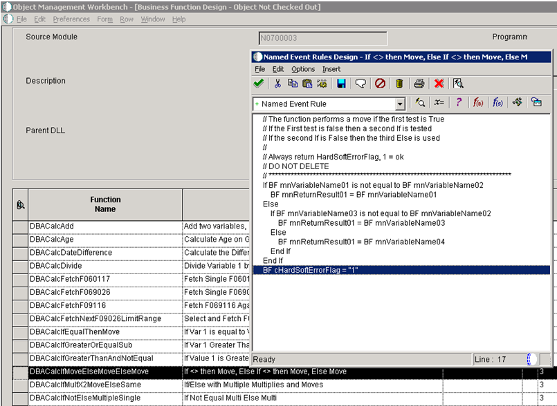
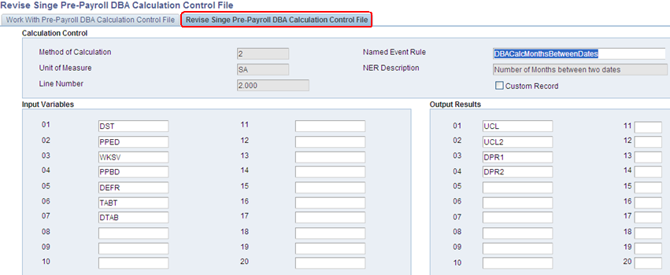
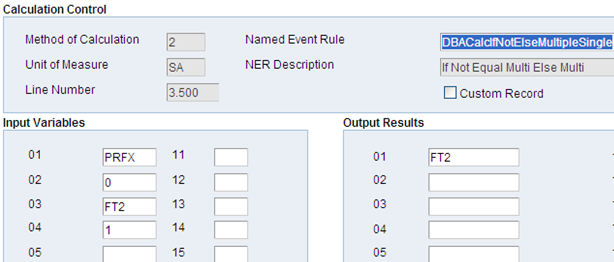
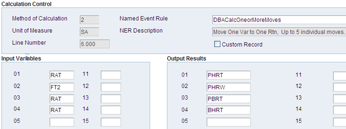
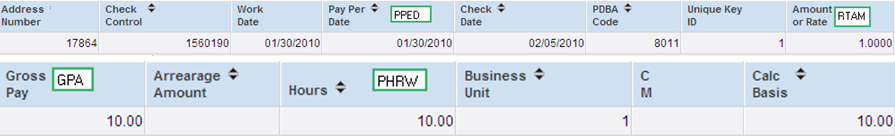
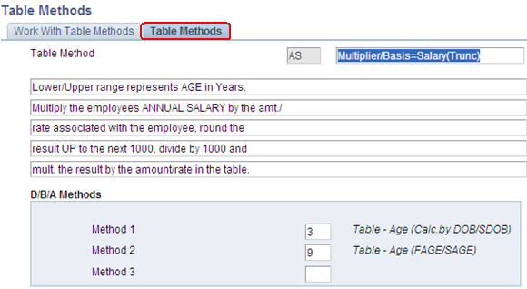
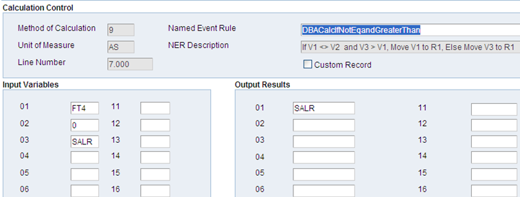

| Purpose |
| Scope |
| Details |
| Table Methods (P059027/F069027) |
| Calculation Tables (P059021/F069026) |
| DBA Setup (P059116/F069116) |
| Employee DBA Instructions (P050181/F06106) |
| Work With Pre-Payroll DBA Calculation Control File (P07901/F07901) |
| Named Event Rule |
| Input Variables and Output Results |
| Named Event Rule: DBACalcMonthsBetweenDates |
| Named Event Rule: DBACalcFetchNextF09026LimitRange |
| Named Event Rule: DBACalcIfNotElseMultipleSingle |
| Named Event Rule: DBACalcIfMoveElseMoveElseMove |
| Named Event Rule: DBACalcMult |
| Named Event Rule: DBACalcOneorMoreMoves |
| Named Event Rule: DBACalcIfNotEqandGreaterThan |
This document will assist in deciphering a Table Method (P07901/F07901).
Table Methods are setup in the P059027, and stored in Table F069027.
Table Method (PRUM) - This defaults in from the Calculation Table (P059021)
DBA Method 1 (DEDM) - This is setup in DBA Setup (P059116), under Method of Calculation
Table Code (FTC) - Is pulled in from the Table Code (DTAB) in DBA Setup (P059116)
Table Method (PRUM) - Viewed also in Table Methods (P059027)


Note the Method of Calculation. Only a method of calculation that is valid for the table method set up on the calculation table can be used. The valid methods of calculations are defined at the table method level. If a Method of Calculation is entered that is not valid for the table method on the calculation table an error is generated:

In this example a value of 2 is the only valid Method of Calculation for table method SA which is attached to table code 08011 (see first image)

(Accessible via fast path only)


Every Table Method and NER Function within the table method will have (input) Variables and (output) Return Results.
The Return Results data items may be used to temporarily store information to be used in the subsequent line numbers or may be used to hold historical data.
The named event rule defines the function of the record within the table method. All the Named Event Rules in the F07901 are handled by the N0700003.
It is often difficult when looking at the NER and the description to determine exactly what it is doing. One example of such NER is DBACalcIfMoveElseMoveElseMove. The description of this NER is:
If <> then Move, Else if <> then Move, Else Move
So how can it be determined exactly what this NER is doing?
Access OMW and move the N0700003 over to a project.
Highlight the N0700003 in the project and click on the Design icon in the center
Click on the Design Tools tab
Click on the Start Business Function Design Aid icon

Highlight the Function Name and from the Form exit, select edit. This defines the function of the NER.

These data items are defined in the UDC 07|VN. These data items will correspond back to the table method, the calculation table, the DBA setup, and/or the employee setup. It is important to note that not all data items in the 07|VN will have a corresponding record in the Data Dictionary.
Dissection of a table method in the P07901/F07901 follows.
- Number of Months between two dates
This record will calculate the number of months the employee has been employed by subtracting the Date Started from the Pay Period End Date. This value is then passed into the Upper Limit.

| Input Variables |
UCL Calculation |
Output Results | Value |
|---|---|---|---|
| DST: Date Started | 01/01/2009 | UCL: Upper Limit | 13.17 |
| PPED: Pay Period End Date | 01/30/2010 | UCL2: Upper Limit 2 | |
| WKSV: Weeks of Service | Unchecked | DPR2: Proration Factor 2 | |
| PPBD: Pay Period Begin Date | 01/17/2010 | DPR2: Proration Factor 2 | |
| DEFR: Rate Control | Blank (3) | ||
| TABT: Table Type | D | ||
| DTAB: Table Code | 08011 |
PPED-DST 01/30/2010 – 01/01/2009 (395 days / 30 days = 13.17 months). This value, 13.17, is passed into UCL to determine which table record is to be used to calculate the employee’s accrual (see next line number).
- Select and Fetch F069026 for Limit Range
This record fetches the applicable record from the calculation table based on the upper limit passed in from the previous record. The output results are updated with the appropriate values if applicable.

| Input Variables |
Value |
Output Results | Value |
|---|---|---|---|
| TABT: Table Type | D | LCL: Lower Limit | 0 |
| DTAB: Table Code | 08011 | UCL: Upper Limit | 35.99 |
| UCL: Upper Limit | 13.17 | FT2: Table Amount 1 | 10.00 |
| DCLC: Accrue Days | Unchecked | FT3: Rate | 0 |
| AN8: Address Number | FT4: Amount 2 | 0 | |
| UCL2: Upper Limit 2 | ADL: Annual Dollar Limit | 100.00 | |
| DPR1: Proration Factor 1 | EXRT: Excess Rate | 0 | |
| DPR2: Proration Factor 2 | RTAB: Rollover Table | Blank | |
| CMAX: ITD Limit | 0 |

In this case the first record is retrieved as 13.17 falls between 0 and 35.99. Now UCL becomes 35.99.
-If Not Equal Multi Else Multi
This function checks to see if variable 01 is not equal to variable 02. If true, multiply variable 03 by variable 01 getting result 01. If false, multiply variable 03 by variable 04 getting result 01.
If PRFX is not equal to zero, multiply PFRX by FT2 and move the result to FT2. If PRFX is equal to zero, multiply FT2 by 1 and move the result to FT2. (In this scenario the result is False

| Input Variables | Value | Output Results | Value |
|---|---|---|---|
| PRFX: Proration Facto | Blank | FT2: Table Amount 1 | 10.00 |
| 0 | |||
| FT2: Table Amount 1 | 10.00 | ||
| 1 |
Proration factor (PRFX) is not stored; it is derived based on the rate control field (i.e. based on rate control what percentage of the DBA is active in the pay period).
Rate Control: This field will be used to control the rate used to calculate a DBA when multiple rates are valid within the pay cycle. During payroll and interim processes, determine whether the system will use the ending rate, beginning rate or prorate all rates found within a pay cycle period.
Since there is no rate change applicable during this pay period, the rate control would not be activated. This would result in the proration factor for the accrual to be zero.
Since PRFX is equal to zero FT2 is multiplied by 1 and is moved to FT2.
-If <> then Move, Else if <> then Move, Else Move
The function performs a move if the first test is True. If the first test is false then a second if is tested. If the second if is false then the third else is used.
If FT3 is not equal to zero then move FT3 to RAT, if false then…
If FT3 is equal to zero and RTAM is not equal to PHRT, move RTAM to RAT, if false then…
If FT3 is equal to zero and RTAM is equal to PHRT, move PHRT to RAT

| Input Variables | Value | Output Results | Value |
|---|---|---|---|
| FT3: Rate | 0 | RAT: Rate or Amount | 1.00 |
| 0 | |||
| RTAM: Rate or Amount | 1.00 | ||
| PHRT: Hourly Rate | 25.000 |
FT3 (0) is equal to zero (False)
FT3 (0) is equal to zero and RTAM (1.00) is not equal to PHRT (25.00), move RTAM (1.00) to RAT (True)
Calculation stops here
Output Result 01 for RAT is now 1.00
- Multiple Function
Multiplies variable 01 variable 02.
Multiply FT2 by RAT and move the result to GPA

| Input Variables | Value | Output Results | Value |
|---|---|---|---|
| FT2: Table Amount | 10.00 | GPA: Gross Pay | 10.00 |
| RAT: Rate or Amount | 1.0 |
Multiply FT2 (10.00) by RAT (1.00). The result is moved to GPA (10.00)
- Move One Var to One Rtn, Up to 5 individual moves
This function moves one value into another.
Move RAT to PHRT, move FT2 to PHRW, move RAT to PBRT, move RAT to BHRT

| Input Variables | Value | Output Results | Value |
|---|---|---|---|
| RAT: Rate or Amount | 1.00 | PHRT: Hourly Rate | 1.00 |
| FT2: Table Amount 1 | 10.00 | PHRW: Hours Worked | 10.00 |
| RAT: Rate or Amoun | 1.00 | PBRT: Rate Distribution | 1.00 |
| RAT: Rate or Amount | 1.00 | BHRT: Hourly Rate Base | 1.00 |
This function is just moving (copying) the values from one data item to another for historical purposes.
F0709 after prepayroll: (PHRT, PBRT and BHRT are not stored in the F0709/F0719.)

Payment Review>DBA Review

Miscellaneous Information

When viewing a table method via the application (Table Methods/P059027) it appears there is ample space for the description, however each line is actually limited to only 50 characters. Due to this the description in the application may not fully define the table method functionality as is the case with table method AS. To determine the full functionality it is advised to review the table method in P07901.

Line 4.00 Captures the employee’s age
Line 5.00 Fetches the appropriate record from the calculation table based on the employee’s age
Line 6.00 Multiplies the employee’s annual salary by the rate (this is moved to data item SALR)
Line 6.50 Rounds off the decimals of the value stored in data item SALR
Line 7.00 Compares the value in SALR to the value in FT4, which is defined on the calculation table as Amount/Rate2. This acts as a limit. This is not described in the Table Method definition.
- If V1<>V2 and V3 > V1, Move V1 to R1, Else Move V3 to R1
For example, a life insurance plan is established in which the employee is covered up to their annual salary amount but not more than 500,000. Therefore on the calculation table, FT4 would be set to 500000.
If the employee’s salary is 600,000 annually, this record would perform as follows:
V1 = FT4 = 500000
V2 = 0
V3 = SALR = 600000
If V1<>V2 and V3 > V1, Move V1 to R1, Else Move V3 to R1
If 500000<>0 and 600000>500000, Move 500000 to SALR, Else Move 600000 to SALR
True True Perform Ignore

Line 8.00 Adds 499 to the value in the SALR field and puts the result in SALR
Line 9.00 Divides the value in SALR by 1000 (this is the rounding)
Line 9.50 Rounds off the decimals
Line 10.00 Calculates the result in step 9.50 by the rate in the calculation table (FT2)
Line 10.50 Applies the proration factor if applicable
Line 11.00 Moves values from the input variables to the output results for historical posting.
Miscellaneous Information (cont.)